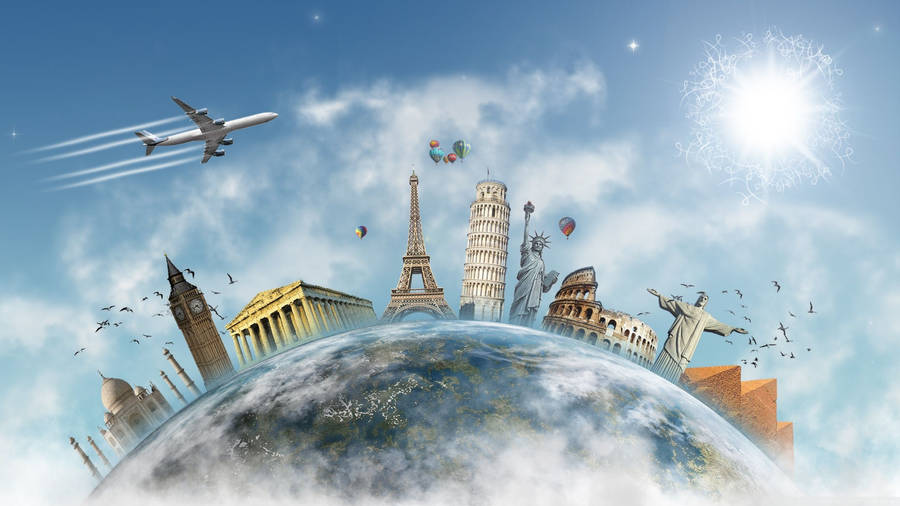
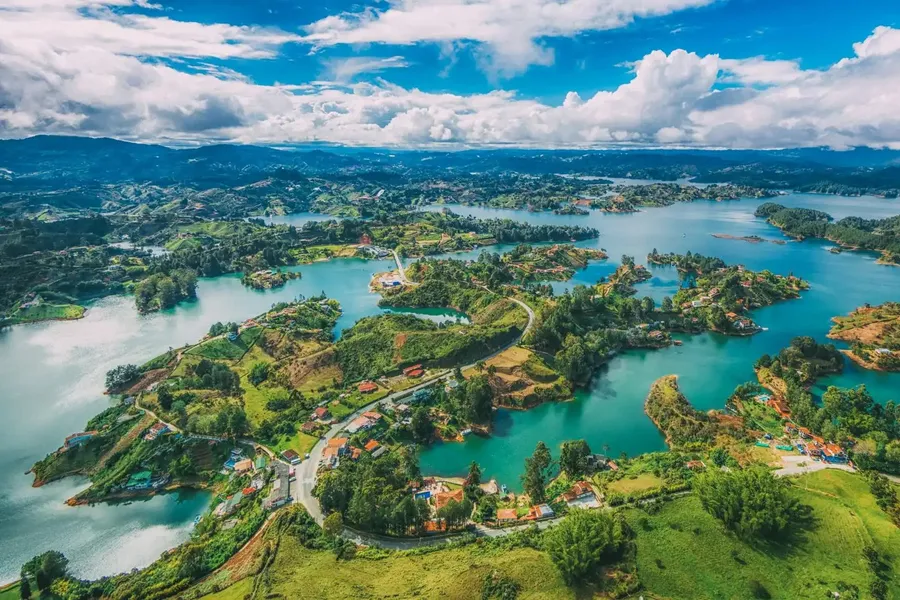
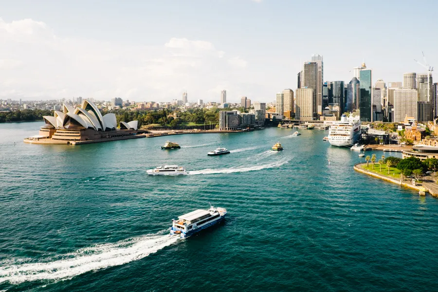
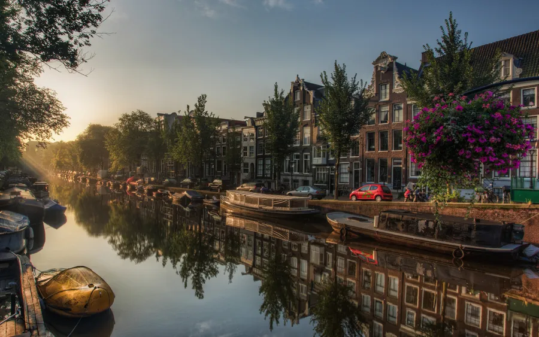
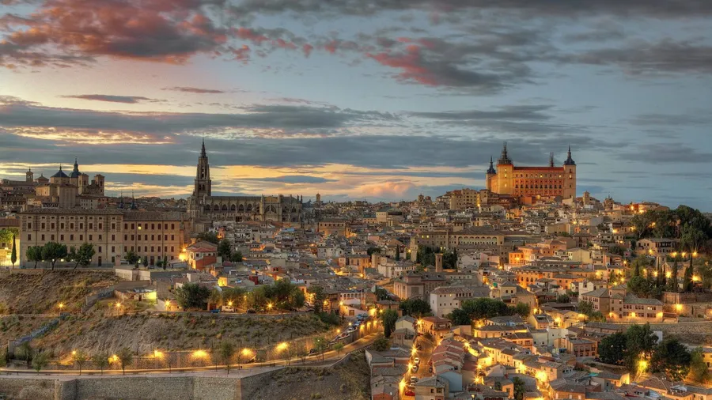

BIENVENIDOS A MI BLOG
Sobre mí y mis aventuras por el mundo 🌍
¡Hola! Soy Diego Fernando, un apasionado de los viajes, la cultura y las nuevas experiencias. Nací en Colombia, un país lleno de magia, paisajes diversos y gente cálida. Desde pequeño siempre soñé con recorrer el mundo, y hoy puedo decir que he tenido la fortuna de visitar lugares que han transformado mi vida. En esta sección quiero compartir contigo mi historia y algunas de las aventuras que he vivido explorando Colombia, Australia, Países Bajos y España.

Colombia: Raíces de color y tradición 🌄
Mi historia comienza en Colombia, un país donde la naturaleza y las tradiciones convergen en perfecta armonía. Uno de mis lugares favoritos es el Eje Cafetero, donde he caminado entre plantaciones de café mientras disfruto del aroma más auténtico del mundo. Cada sorbo de café en esa región es una conexión directa con nuestras raíces.
En Cartagena, me enamoré de las calles empedradas del centro histórico, con sus casas coloniales llenas de flores y balcones coloridos. Una tarde, mientras paseaba por el muelle, conocí a un pescador que me llevó en su bote a las Islas del Rosario. Nunca olvidaré la transparencia del agua ni los atardeceres que parecen pintados con acuarela.
Por supuesto, no podía faltar la aventura en el Amazonas. Allí, entre caminatas en la selva y paseos en canoa, aprendí de la sabiduría de las comunidades indígenas. Dormir bajo un cielo estrellado, rodeado de los sonidos de la naturaleza, fue una de las experiencias más impactantes de mi vida.

Australia: Donde el desierto se encuentra con el océano 🦘
Mi primera experiencia fuera de América Latina fue en Australia, un continente que siempre me había intrigado. Cuando llegué a Sídney, quedé maravillado con la Ópera de Sídney y el icónico puente Harbour Bridge. La ciudad vibra con energía, combinando lo moderno con lo natural.
Mi viaje no estaría completo sin explorar la Gran Barrera de Coral. Fue como entrar en un universo paralelo lleno de colores y vida submarina. Bucear allí me hizo comprender lo frágil y hermosa que es la naturaleza.
Otra de mis aventuras más memorables fue un recorrido por el desierto del Outback. En medio de paisajes rojos infinitos, visité el Uluru, una roca sagrada para los pueblos aborígenes. Allí aprendí sobre su cultura y la conexión espiritual que tienen con la tierra.

Países Bajos: Un cuento entre tulipanes y molinos 🌷
p>Viajar a Países Bajos fue como entrar en un cuadro impresionista. Mis días en Ámsterdam los pasé recorriendo canales, admirando la arquitectura de las casas y visitando museos como el de Van Gogh. Pedalear por la ciudad me hizo sentir parte de la vida cotidiana de los neerlandeses.
En primavera, fui a Keukenhof, el parque de tulipanes más famoso del mundo. Los campos se extienden hasta donde alcanza la vista, formando alfombras de colores que te dejan sin aliento.
Mi parte favorita del viaje fue explorar Kinderdijk, un lugar icónico lleno de molinos de viento. Alquilé una bicicleta y recorrí los senderos mientras el sol se reflejaba en los canales. La tranquilidad del lugar es algo que jamás olvidaré.

España: Entre historia, arte y sabores
España se ha convertido en mi segundo hogar. Desde mi llegada, quedé encantado con su diversidad cultural y su gente. Mi primera parada fue Madrid, donde disfruté de tardes en el Parque del Retiro y recorrí el Museo del Prado para admirar las obras maestras de Velázquez y Goya.
En Barcelona, me perdí en la magia de la arquitectura de Gaudí. La Sagrada Familia y el Parque Güell me hicieron sentir que estaba en un lugar salido de un sueño.
No puedo dejar de mencionar mi viaje al sur, a Granada. La Alhambra y sus jardines me transportaron a otra época, mientras que las callejuelas del Albaicín me recordaron la mezcla de culturas que define a España.
Por último, mi corazón pertenece a Valladolid, donde vivo actualmente. Es una ciudad con encanto histórico, pero con la tranquilidad de un hogar. Aquí, cada rincón tiene una historia, y cada tapa que disfruto en sus bares me conecta más con la cultura española.

Reflexiones sobre mis viajes y proyectos
Viajar no es solo cambiar de lugar; es cambiar de perspectiva. Cada destino me ha enseñado algo único: desde la calidez de las personas en Colombia hasta la inmensidad del océano en Australia; desde los paisajes pintorescos de Países Bajos hasta la riqueza histórica de España.
Hoy, mi pasión por los viajes sigue más viva que nunca, y espero seguir sumando aventuras a mi lista. A través de esta página, quiero inspirarte a explorar el mundo y descubrir las maravillas que están esperándote, cerca o lejos.
¡Gracias por acompañarme en esta travesía! Espero que disfrutes tanto de mis historias como yo al vivirlas.
Los invito a visitar mi otra pagina web de noticias del mundo, espero que me apoyes en mis proyectos. https://nexoscompany.es/